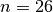
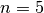
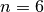
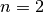
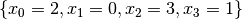
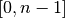

5.1. The n-queens problem
We have discussed the n-queens problem (and defined what a solution is) in the chapter Introduction to constraint programming.
5.1.1. The n-queen problem in more details
In the general n-queens problem, a set of n queens is to be placed on an n x n chessboard so that no two queens attack each other.
Little is known that finding one solution for every  is... quite easy[1].
Indeed, there exist polynomial-time algorithms that compute a solution given a size . For instance, Hoffman
et al. proposed a simple algorithm to return a solution of the n-queens problem [Hoffman1969].
is... quite easy[1].
Indeed, there exist polynomial-time algorithms that compute a solution given a size . For instance, Hoffman
et al. proposed a simple algorithm to return a solution of the n-queens problem [Hoffman1969].
| [1] | In computer science jargon, we say that the problem of finding one solution for the n-queens problem is
in  . Actually, it’s the decision version of this problem but to keep it simple, let’s say that
finding one solution is straightforward and easy and shouldn’t take too long. . Actually, it’s the decision version of this problem but to keep it simple, let’s say that
finding one solution is straightforward and easy and shouldn’t take too long. |
| [Hoffman1969] | (1, 2) Hoffman, Loessi and Moore. Constructions for the Solution of the m Queens Problem, Mathematics Magazine, p. 66-72, 1969. |
So we have to be careful when we talk about the n-queens problem. There are at least three different problems that people refer to when talking about the n-queens problem:
- finding one solution[2],
- counting the number of solutions and
- finding (explicitly) all these solutions.
While the first problem is easy, the two others are difficult[3].
| [2] | By solution, we mean feasible solution. |
| [3] | These two problems are NP-Hard. See [Jordan2009]. |
| [Jordan2009] | (1, 2) Jordan and Brett. A survey of known results and research areas for n-queens, Discrete Mathematics, Volume 309, Issue 1, 2009, pp 1-31. |
As with the Golomb rulers problem, the experts could only find the number of all the
solutions for small values. The biggest number of queens for which we know precisely the number of
solutions is . The
On-Line Encyclopedia of Integer Sequences keeps track of the number of solutions
(sequence A002562 for unique solutions (up to a symmetry) and
sequence A000170 for distinct solutions). The next table reports
the number of unique and distinct solutions for several values of .
| n: | 1 | 2 | 3 | 4 | 5 | 6 | 7 | 8 | 9 | 10 | 11 | 12 | 13 | 14 |
|---|---|---|---|---|---|---|---|---|---|---|---|---|---|---|
| unique: | 1 | 0 | 0 | 1 | 2 | 1 | 6 | 12 | 46 | 92 | 341 | 1,787 | 9,233 | 45,752 |
| distinct: | 1 | 0 | 0 | 2 | 10 | 4 | 40 | 92 | 352 | 724 | 2,680 | 14,200 | 73,712 | 365,596 |
Notice that there are more solutions for  than . What about the last three known values? Here there are:
| n: | 24 | 25 | 26 |
|---|---|---|---|
| unique: | 28,439,272,956,934 | 275,986,683,743,434 | 2,789,712,466,510,289 |
| distinct: | 227,514,171,973,736 | 2,207,893,435,808,352 | 22,317,699,616,364,044 |
Quite impressive, isn’t it? It’s even more impressive when you know that these numbers were obtained by explicitly finding all these solutions!
Is the n-queens problem only a “toy” problem?
While the n-queens problem is a wonderful problem to study backtracking systems and is intensively used in benchmarks to test these systems, there are real problems that can be modelled and solved as n-queens problems. For instance, it has been used for parallel memory storage schemes, VLSI testing, traffic control and deadlock prevention (see [Jordan2009]).
5.1.2. How to solve the problem?
We follow again the classical The three-stage method: describe, model and solve.
5.1.2.1. Describe
What is the goal of the n-queens problem? We will focus on finding one or all solutions. Given a size for the
 chessboard, place queens[5] so that no two queens attack each other.
chessboard, place queens[5] so that no two queens attack each other.
| [5] | It is not obvious that for every , there exist at least a solution. In fact, for  and
 there are no solution. Hoffman et al. proved that there are solutions for every there are no solution. Hoffman et al. proved that there are solutions for every  in [Hoffman1969]. in [Hoffman1969]. |
What are the decision variables (unknowns)? We have different choices. One clever way to reduce the number of variables is to introduce only one variable for each queen.
What are the constraints? No two queens can attack each other. This means to place
queens on the chessboard such that no two queens are placed on the same row, the same column or the same diagonal.
5.1.2.2. Model
We know that no two queens can be placed on the same column and that we have as much queens as columns. We will use one variable to place one queen on each column. The value of the variable will denote the row of the corresponding queen.
Figure Variables to model the n-queens problem. illustrates the variables we will use to solve the n-queens problem in this chapter.
Variables to model the n-queens problem.
The solution depicted is . The fact that the queens cannot be on the same column is directly encoded into the model without needing a constraint. The domains of the variables () also ensure that every column will be populated by a queen.
We have to ensure that the variables cannot take the same value. This is easily done with
 . We have to ensure that no two queens can be on the same diagonal. It would be nice to
have the variables on the diagonals so that we could use again the AllDifferent constraint. Actually, we know when
two queens are
on the same diagonal. We’ll use a known trick to model this constraint in the next section.
. We have to ensure that no two queens can be on the same diagonal. It would be nice to
have the variables on the diagonals so that we could use again the AllDifferent constraint. Actually, we know when
two queens are
on the same diagonal. We’ll use a known trick to model this constraint in the next section.
5.1.2.3. Solve
This time we will... test some search strategies. We will not devise a good search strategy because we don’t know yet what possibilities are implemented in the CP solver. We will test different search strategies and see what works and why.
Google or-tools |
User's Manual
Google search
Welcome
Tutorial examples
Current chapter
5. Defining search primitives: the n-queens problem
Previous section
5. Defining search primitives: the n-queens problem
Next section
5.2. Implementation of the basic model